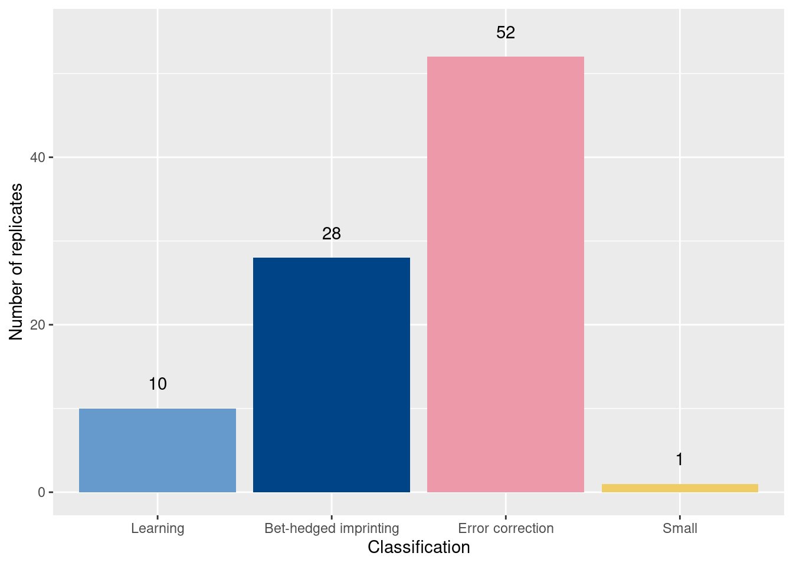
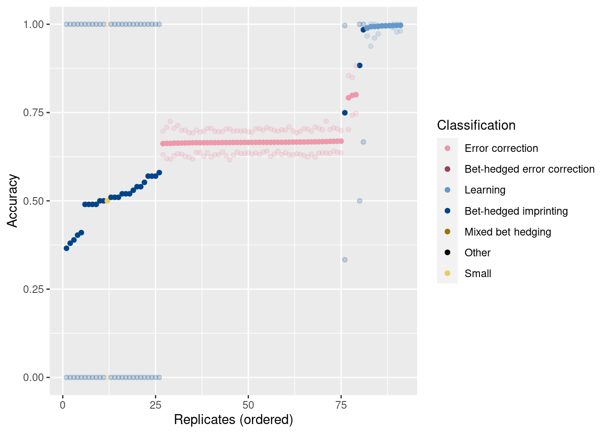
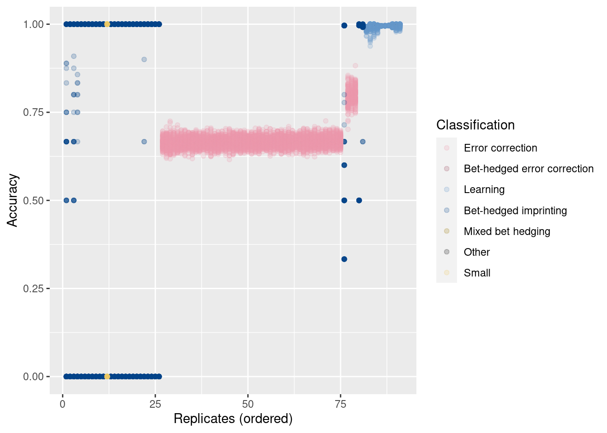
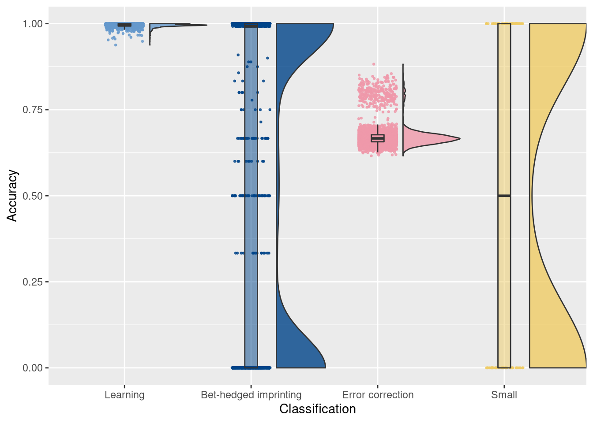
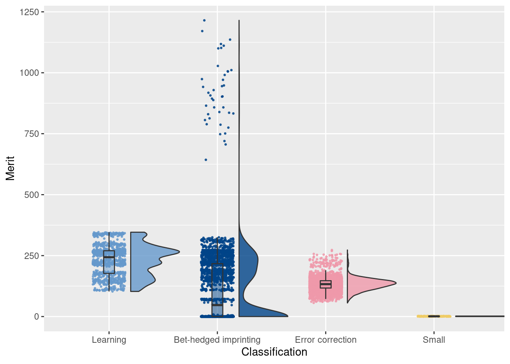
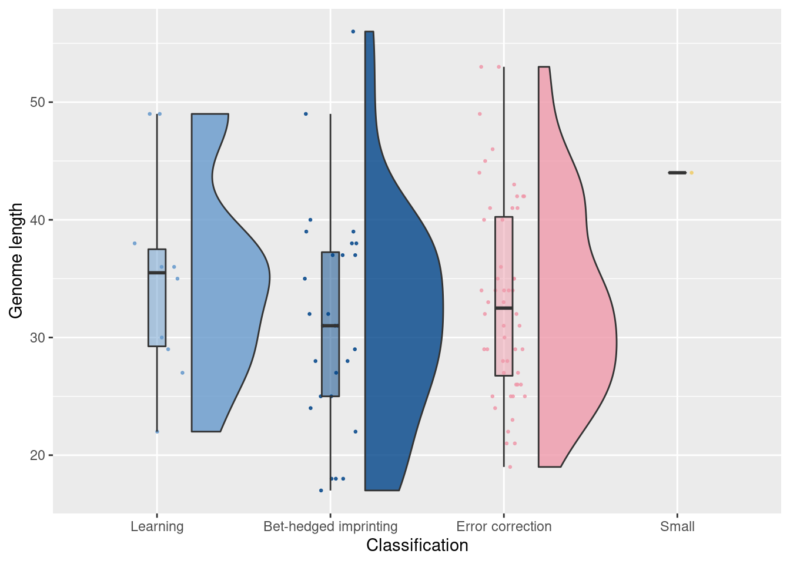
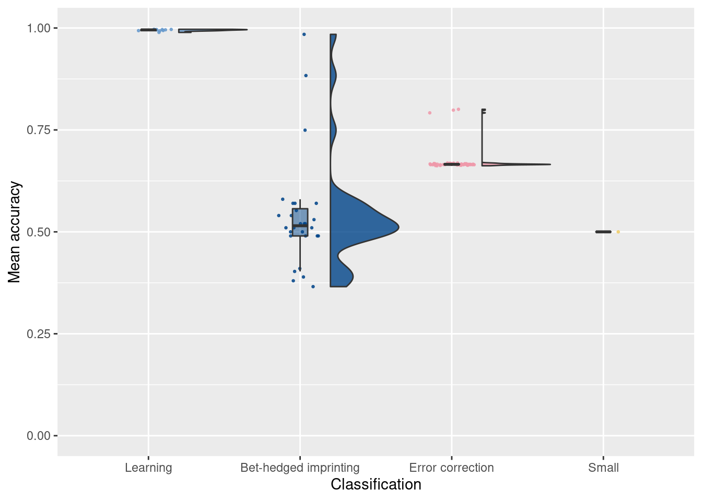
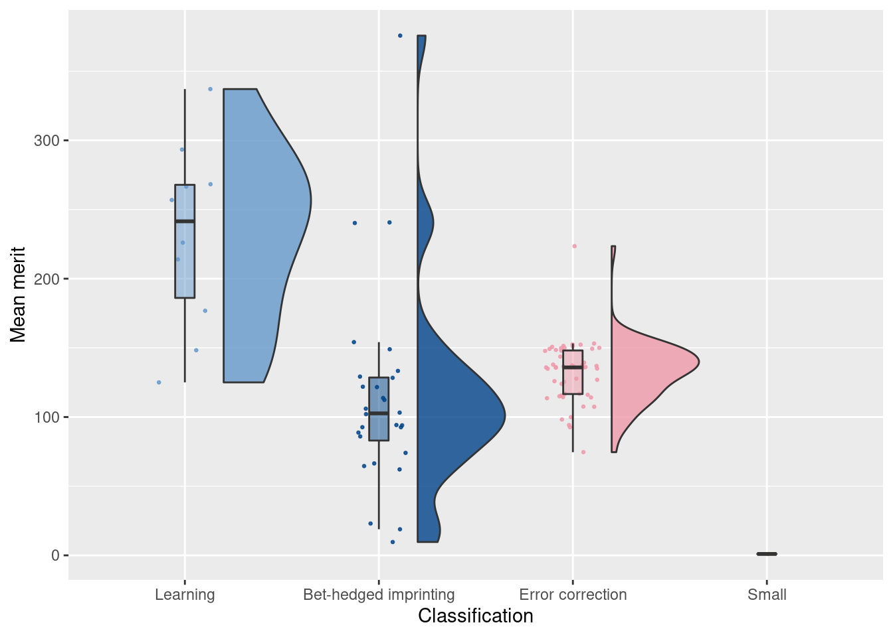

Section 2 Initial run - two cues
This experiment is located in experiments/exploratory/2022_07_27__two_cues_phylo.
The experiment aimed to see what behaviors evolved in an two-cue environment with naive parameters.
2.1 Dependencies
# External
library(ggplot2)
library(dplyr)
source("https://gist.githubusercontent.com/benmarwick/2a1bb0133ff568cbe28d/raw/fb53bd97121f7f9ce947837ef1a4c65a73bffb3f/geom_flat_violin.R")
# Internal
source('../global_shared_files/constant_vars__two_cues.R')
source('../global_shared_files/shared_funcs__two_cues.R')2.2 Data prep
df = read.csv('../experiments/exploration/2022_07_27__two_cues_phylo/data/combined_final_dominant_data.csv')
df = classify_individual_trials(df)
df = classify_seeds(df)
df_summary = summarize_final_dominant_org_data(df)
classification_summary = summarize_classifications(df_summary)2.3 Classification summary
How many replicates evolved each behavior?
ggplot(classification_summary, aes(x = seed_classification_factor, y = count, fill = seed_classification_factor)) +
geom_col() +
geom_text(aes(y = count + 3, label = count)) +
scale_fill_manual(values = color_map) +
xlab('Classification') +
ylab('Number of replicates') +
theme(legend.position = 'none')
2.4 Accuracy plots
Order the points by mean accuracy
df_summary = df_summary[order(df_summary$accuracy_mean),]
df_summary$seed_order = 1:nrow(df_summary)
df$seed_order = NA
for(seed in unique(df$seed)){
df[df$seed == seed,]$seed_order = df_summary[df_summary$seed == seed,]$seed_order
}For each replicate, plot mean accuracy as a solid point and min/max as partially transparent points.
ggplot(df_summary, aes(x = seed_order, color = seed_classification)) +
geom_point(aes(y = accuracy_mean)) +
geom_point(aes(y = accuracy_min), alpha = 0.2) +
geom_point(aes(y = accuracy_max), alpha = 0.2) +
scale_color_manual(values = color_map) +
xlab('Replicates (ordered)') +
ylab('Accuracy') +
labs(color = 'Classification')
Now plot the accuracy of each sample, maintaining the same order on the x-axis.
ggplot(df, aes(x = seed_order, y = accuracy, color = seed_classification)) +
geom_point(alpha = 0.2) +
scale_color_manual(values = color_map) +
xlab('Replicates (ordered)') +
ylab('Accuracy') +
labs(color = 'Classification') 
2.5 Raincloud plots (individual trials)
# Raincloud plot of accuracy
ggplot(df, aes(x = seed_classification_factor, y = accuracy, fill = seed_classification_factor)) +
geom_flat_violin(scale="width", position = position_nudge(x = .2, y = 0), alpha = .8 ) +
geom_point(mapping=aes(color=seed_classification_factor), position = position_jitter(width = .15, height = 0), size = .5, alpha = 0.8 ) +
geom_boxplot( width = .1, outlier.shape = NA, alpha = 0.5 ) +
scale_fill_manual(values = color_map) +
scale_color_manual(values = color_map) +
xlab('Classification') +
ylab('Accuracy') +
theme(legend.position = 'none')
# Raincloud plot of merit
ggplot(df, aes(x = seed_classification_factor, y = merit, fill = seed_classification_factor)) +
geom_flat_violin(scale="width", position = position_nudge(x = .2, y = 0), alpha = .8 ) +
geom_point(mapping=aes(color=seed_classification_factor), position = position_jitter(width = .15, height = 0), size = .5, alpha = 0.8 ) +
geom_boxplot( width = .1, outlier.shape = NA, alpha = 0.5 ) +
scale_fill_manual(values = color_map) +
scale_color_manual(values = color_map) +
xlab('Classification') +
ylab('Merit') +
theme(legend.position = 'none')
2.6 Raincloud plots (per replicate)
# Raincloud plot of genome length
ggplot(df_summary, aes(x = seed_classification_factor, y = genome_length, fill = seed_classification_factor)) +
geom_flat_violin(scale="width", position = position_nudge(x = .2, y = 0), alpha = .8 ) +
geom_point(mapping=aes(color=seed_classification_factor), position = position_jitter(width = .15, height = 0), size = .5, alpha = 0.8 ) +
geom_boxplot( width = .1, outlier.shape = NA, alpha = 0.5 ) +
scale_fill_manual(values = color_map) +
scale_color_manual(values = color_map) +
xlab('Classification') +
ylab('Genome length') +
theme(legend.position = 'none')
# Raincloud plot of mean accuracy of replicates
ggplot(df_summary, aes(x = seed_classification_factor, y = accuracy_mean, fill = seed_classification_factor)) +
geom_flat_violin(scale="width", position = position_nudge(x = .2, y = 0), alpha = .8 ) +
geom_point(mapping=aes(color=seed_classification_factor), position = position_jitter(width = .15, height = 0), size = .5, alpha = 0.8 ) +
geom_boxplot( width = .1, outlier.shape = NA, alpha = 0.5 ) +
scale_fill_manual(values = color_map) +
scale_color_manual(values = color_map) +
scale_y_continuous(limits = c(0,1)) +
xlab('Classification') +
ylab('Mean accuracy') +
theme(legend.position = 'none')
# Raincloud plot of mean merit of replicates
ggplot(df_summary, aes(x = seed_classification_factor, y = merit_mean, fill = seed_classification_factor)) +
geom_flat_violin(scale="width", position = position_nudge(x = .2, y = 0), alpha = .8 ) +
geom_point(mapping=aes(color=seed_classification_factor), position = position_jitter(width = .15, height = 0), size = .5, alpha = 0.8 ) +
geom_boxplot( width = .1, outlier.shape = NA, alpha = 0.5 ) +
scale_fill_manual(values = color_map) +
scale_color_manual(values = color_map) +
xlab('Classification') +
ylab('Mean merit') +
theme(legend.position = 'none')